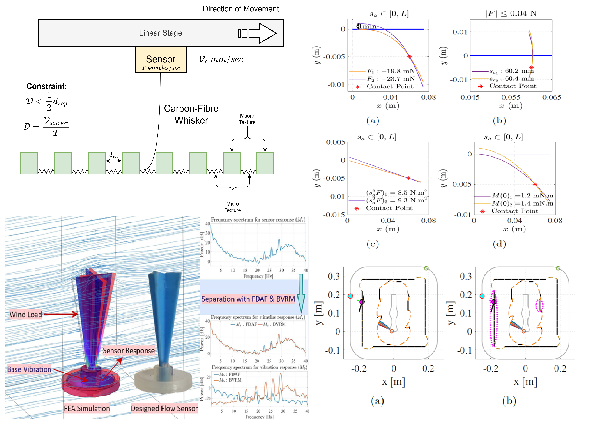

Research
My research connects sensing hardware, computational interpretation, and real-world applications. The central goal is to build sensing systems that can physically interact with the world, convert interaction into measurable signals, interpret those signals through mathematical and computational models, and apply them to robotics, tactile perception, localization, human-centred sensing, and immersive systems.
Design focuses on how sensing systems are physically built. Computation focuses on how signals are calibrated, modeled, filtered, estimated, and interpreted. Application focuses on how these systems are used in robotics, perception, localization, texture analysis, vibrometry, ball catching, and human-centred studies.
Research Areas

Design
This area covers the physical design of sensing systems and experimental platforms.
- Bio-inspired whisker sensors
- Modular sensing architecture
- Soft and vision-based haptic sensors
- Contact-based vibrometer design
- Robotic experimental platforms

Computation
This area covers the mathematical and computational methods used to interpret sensor data.
- Sensor calibration
- Sensor modeling
- Preimage-based state estimation
- Robot localization
- Signal filtering and fusion
- Trajectory estimation

Application
This area covers how sensing and computation are applied to real research problems.
- Texture perception
- Robot localization and navigation
- Contact-based vibrometry
- Ball catching robotics
- Human physiological sensing
- VR and human-centred perception studies
Research Themes
- Bio-inspired tactile sensing
- Whisker-like sensors
- Sensor design and fabrication
- Soft haptic sensing
- Vision-based tactile sensing
- Sensor calibration
- Sensor modeling
- Preimage-based sensing
- Robot localization
- Mobile robot navigation
- Texture roughness and hardness perception
- Visuo-tactile fusion
- Signal separation and filtering
- Contact-based vibration measurement
- Ball trajectory estimation
- Robotic ball catching
- Virtual reality experiments
- Human-centred sensing
- Physiological signal analysis
- Neurocognitive analysis